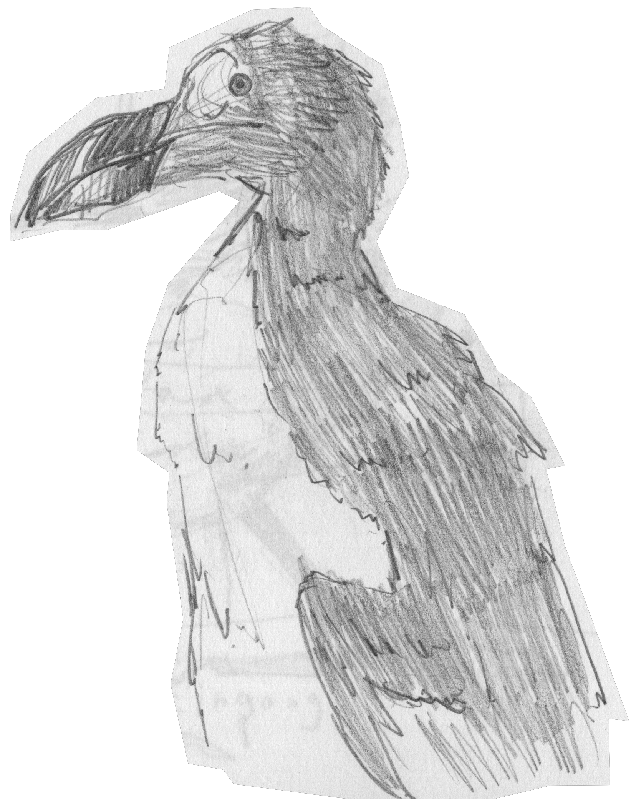
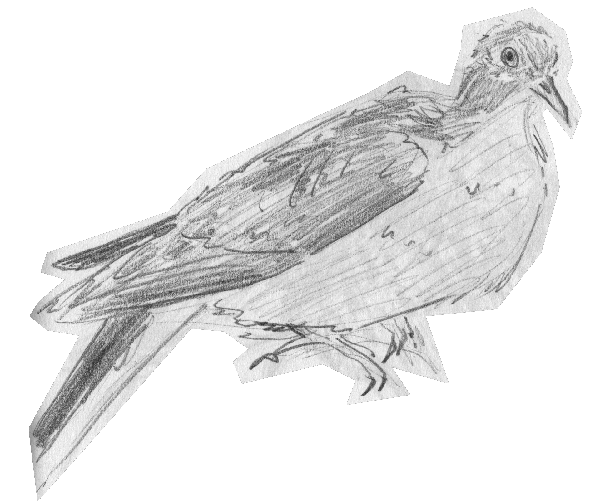
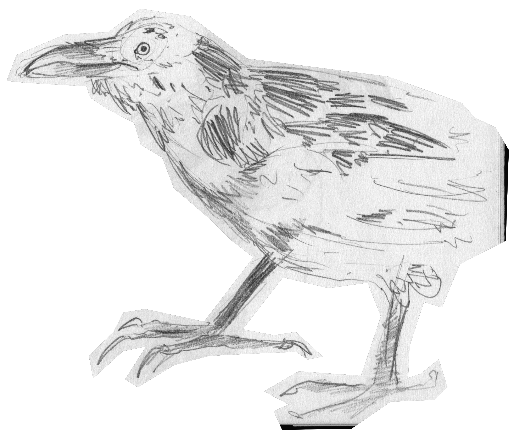
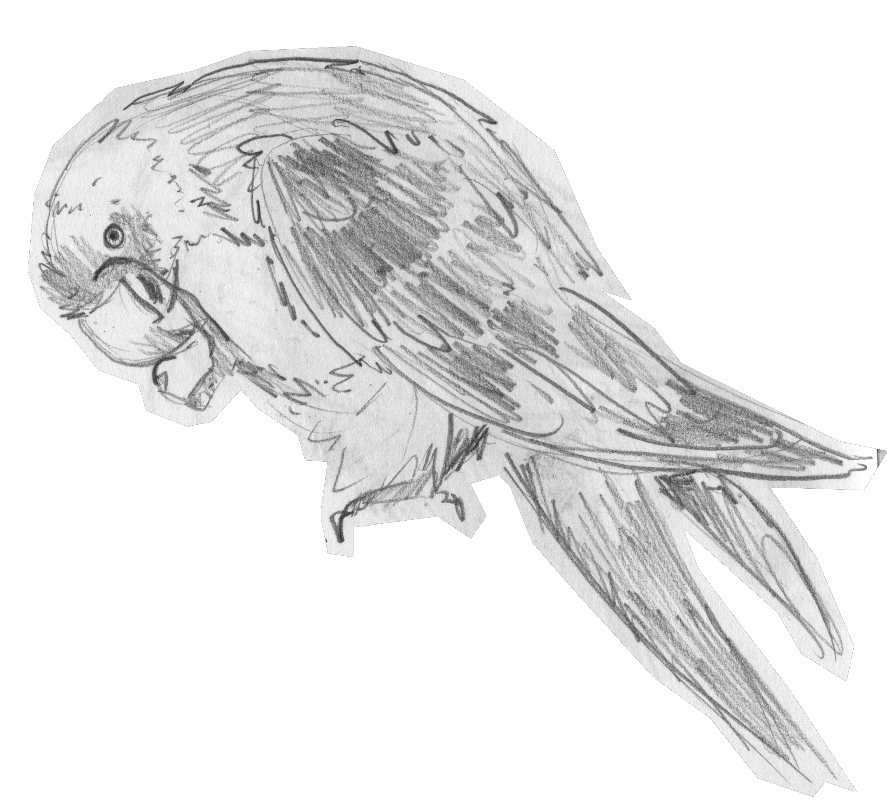
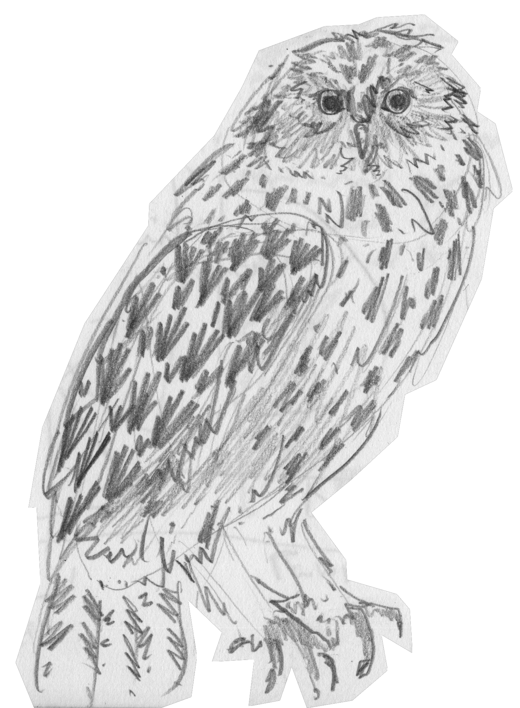
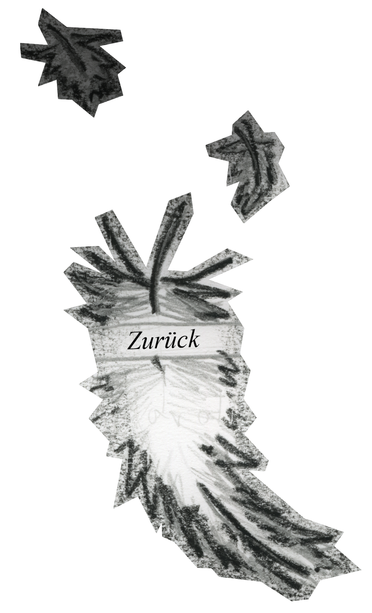

Willkommen im Extinction Club!
Ein Club für Tiere, die längst ausgestorben
sind, jedoch deren irdische Überbleibsel im Naturhistorischen Museum Braunschweig verweilen.
Jedes Präparat ist eine harte Erinnerung an das achtlose Umgehen der Menschheit
mit den Lebewesen um sie herum.
Oliver Puskás, VK Digitale Grundlagen Semester 2 bei Insa Deist.





Quellen:
Pied Raven: Extinct Färöe Island Bird
Beak tax to control predatory birds in the Faroe Islands
Naturhistorisches Museum Braunschweig
